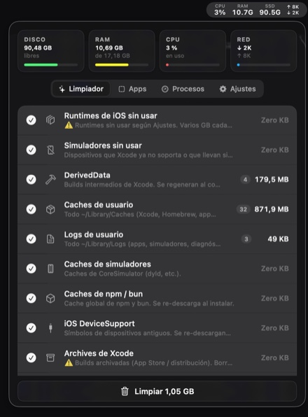

Tu Mac guarda gigas que nunca has visto.
Cachés, restos de apps desinstaladas, entornos de desarrollo y carpetas temporales que crecen solas. DevToolbox las encuentra, te dice cuánto pesan y las borra cuando tú lo digas.
DevToolbox es una utilidad de barra de menús para macOS 14 o superior que libera espacio eliminando los archivos temporales del desarrollo en Xcode, iOS y Node.js.
14 días de prueba, sin tarjeta ni registro. macOS 14 o superior.

Sin sustos
Primero enseña, después borra.
Nada desaparece sin que lo hayas visto. Escanea al abrirlo, te dice cuánto pesa cada categoría y cuántos elementos hay dentro, y solo entonces aparece el botón.
Todo va a la Papelera. Si te arrepientes, está donde siempre.
Escaneo al abrir
El panel llega con los datos hechos. Sin botones que pulsar ni esperas de treinta segundos mirando una rueda.
Listado detallado
Antes de confirmar ves exactamente qué se va: rutas, tamaños y número de archivos de cada categoría marcada.
Qué hace
Seis herramientas, un icono.
Todo desde la barra de menús, sin abrir otra app.
Limpiador
DerivedData, cachés de Xcode y Homebrew, logs, SwiftPM, npm y bun,
archivos de compilación y node_modules de tus proyectos.
Auto‑limpieza
Diaria, cada tres días o semanal, solo de las categorías que marques. Te enteras por el resumen, no por quedarte sin disco.
Simuladores
Vía simctl, nunca borrando carpetas a mano. Detecta los
que no usas y los runtimes viejos, y siempre conserva el más nuevo.
Desinstalador
Arrastrar a la Papelera deja preferencias, cachés y soporte por todo
~/Library. Aquí ves los restos y se van con la app.
Métricas y procesos
CPU, memoria, disco y red en la propia barra. Y los procesos que más consumen, con botón para terminarlos.
Mantener despierto
Para builds largos y CI local. El Mac no se duerme a mitad y no hace falta tocar los ajustes de energía.
Precio
Se paga una vez.
Sin suscripción, sin cuenta, sin recordatorios cada año.
Licencia de por vida
- Todas las funciones, para siempre
- Actualizaciones incluidas
- Úsala en todos tus Macs
- Sin conexión: la licencia se valida en tu Mac
- 14 días de prueba antes de pagar
Pago mediante Stripe. Los impuestos de tu país se calculan al pagar.
Recibes la clave por email al instante.
DevToolbox Lite · gratis
Monitor de CPU, memoria, disco y red con histórico y batería. Analizador de carpetas con detector de archivos grandes olvidados y de duplicados. Aviso cuando queda poco disco.
En la App Store
Hay una versión gratuita.
Hace lo que el sandbox de Apple permite hacer. Limpiar DerivedData o desinstalar apps queda fuera de su alcance por diseño del sistema, no por capricho: por eso la completa se distribuye aparte.
Preguntas
Lo que suelen preguntar.
¿Por qué no está en la App Store?
Porque no cabría. Las apps de la App Store van en un sandbox que les
impide leer ~/Library, ejecutar simctl o
tocar /Applications. La versión que subiéramos allí no
podría limpiar nada. Lo que sí cabe está publicado como DevToolbox Lite.
¿Es seguro instalarla fuera de la App Store?
Va firmada con Developer ID y notarizada por Apple, así que macOS la abre sin advertencias. Cada actualización se descarga firmada y la app la rechaza si la firma no cuadra.
¿Qué borra exactamente?
Solo lo que marques, y siempre a la Papelera. Antes de confirmar ves
el listado completo con rutas y tamaños. Los simuladores se eliminan
con simctl, que es la vía oficial: borrar sus carpetas a
mano deja Xcode inconsistente.
¿La licencia sirve en varios Macs?
Sí. Es tuya, no de una máquina, y se valida sin conexión.
¿Y si no me convence?
Tienes 14 días de prueba con todo desbloqueado antes de pagar, sin tarjeta ni registro. Si aun así te arrepientes, escríbeme y te devuelvo el dinero.